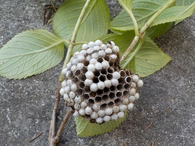
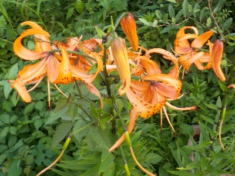
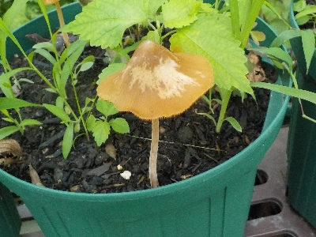
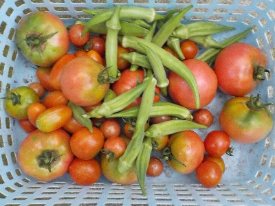
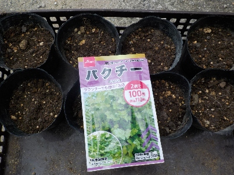
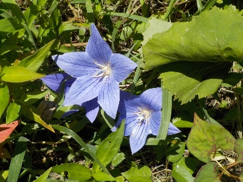
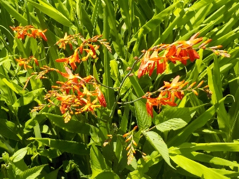

遊びで植物を育てよう
2024/07/29
アジサイの剪定中に蜂の巣発見。

蜂がウロウロしてたので、よく見たら巣がありました。
蜂に気づいて良かったです。
剪定中はハチジェットとハエタタキは常に持って動こうと思いました。
【7月TOP】
【日記TOP】
【園芸TOP】
2024/07/20
オニユリが一斉に咲いています。

一斉に咲いたら一斉に終わります。ユリは派手だけどあっけないですよね。
【7月TOP】
【日記TOP】
【園芸TOP】
2024/07/17
植木鉢にキノコが生えました。

雨が続いていたのでキノコが生えました。
沢山植木鉢を持っていますが、キノコがあ生えたのはこの鉢だけです。
この鉢には何か特別なものがあるんだろうな。
【7月TOP】
【日記TOP】
【園芸TOP】
2024/07/11
雨が止んだ隙間にトマトとオクラの収穫です。

雨が続いて降ったので野菜の収穫をしていませんでした。
今日はちょっとやんだので、水分過剰で割れそうなトマトと、すぐに巨大化して食べれなくなるオクラを優先して収穫しました。
【7月TOP】
【日記TOP】
【園芸TOP】
2024/07/08
今更ですがパクチーのタネをまきました。

タネを買ったけど面倒で蒔かずにいました。まだ大丈夫だろうと思い蒔きましたが、パクチーは夏は駄目みたいですね。
なんとなく南国の野菜だと思っていましたが、20度くらいの気温が最適なようです。
秋になったらまたタネまきするつもりです
【7月TOP】
【日記TOP】
【園芸TOP】
2024/07/06
桔梗が伸びすぎて横になっていました。

背が高くなりすぎて倒れてしまう花って多い気がします。
この桔梗も自力で立てなくなって倒れました。
自然だったら他の草と支えあって伸びるんだろうけど、民家じゃ無理だな。
支柱を立てた方がいいんだろうけど、この場所に桔梗があるのは邪魔なんだな。
【7月TOP】
【日記TOP】
【園芸TOP】
2024/07/06
ヒメヒオウギズイセンは毒があるんですよね。

あちこちでキレイに咲いてていいなと思っているんですが、水仙なので毒があるんですよね。
なので間違える可能性があるニラの近くに生えているもの刈り取るようにしました。
毒は怖いです。
【7月TOP】
【日記TOP】
【園芸TOP】
2024/07/02
オリーブの木でトンボが寝てました。

すぐ側まで近づいても動きませんでした。たぶん素手で取れちゃうんだろうな。
とっても無防備です。
【7月TOP】
【日記TOP】
【園芸TOP】
過去の日記
【2024年7月の日記】
【2023年7月の日記】
【2022年7月の日記】
【2021年7月の日記】
【2020年7月の日記】
【2019年7月の日記】
【2018年7月の日記】
【2017年7月の日記】
【2016年7月の日記】
【2015年7月の日記】
【2014年7月の日記】
【2013年7月の日記】
【2012年7月の日記】
【7月TOP】
【日記TOP】
【園芸TOP】
熱中症に注意しましょう。
【おいしいものを食べよう。】【たくさん寝よう。】
【ソロ活をしよう!】【季節感のあることをしよう。】【動画視聴はほどほどに。】【当サイトの全てのコンテンツは無断転載禁止です。】